contents | previous | next AFTER having given the usual attention to her little boy, Rosalie was at liberty to make the few arrangements that were necessary, and to recollect on the step she was about to take. However earnestly she had wished for such an opportunity as was offered her, she trembled now that the moment approached; yet all she had heard from Mr. Walsingham, and his zeal, which did not seem lessened by the knowledge of her being married, ought to give her strength of mind and courage. But the uncertainty of the time of when she should reach England; the comfortless circumstance of her being so long on board a vessel, which might be encountered by pirates, where she would be the only woman;
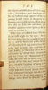 View image of 46the sickness and difficulties of such a voyage with a little infant; and the doubts how far her husband might approve of her thus putting herself wholly in the power of a stranger, were considerations, which, though they did not shake her resolution, gave dreadful agitation to her spirits as she was about to execute it. Other fears too assailed her.—The door in the fossé might not be open; she was far from being sure she could find her way to it; and she shuddered at the thought of descending these long and intricate staircases, and traversing the vault-like passages leading to the room which she was not certain she should find. Cattina had told her a story of the former lord of this castle, she knew not his name, who, being jealous of his wife, had invited the Signeur, whom he suspected of being in her favour, to an entertainment, when he had killed him, and buried him in some of these rooms, and that lights had often been seen from the loops and windows, and strange noises heard in this end of the
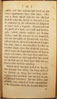 View image of 47castle, and that nobody had lived in the lower apartments since that time. This was a story which had the less affected Rosalie when she heard it, because it was so common in all old houses in England to have such a legend. Holmwood had the ghost of a lady, in a ruff and farthingale, which always walked on Friday nights; and she was not at all surprised, that the old castle of Formiscusa was furnished with the spirit of a murdered knight: but now, that it was necessary for her to wander alone over the deserted caverns, which were the supposed scenes of such a tragic adventure, the same fears and feelings returned as had oppressed her mind on the first two or three days after her arrival in this desolate mansion. While these thoughts passed in succession through her mind, the hour arrived for Cattina to bring her evening meal. Cattina came as usual, but was not in one of her best humours; she was sullen and gloomy, and, instead of such conversation as she sometimes held, she seemed disposed
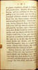 View image of 48to mutter complaints, though in indirect and general terms. Rosalie, afraid of her staying, and too conscious of what was passing in her own mind, was not able to command resolution enough to sooth and flatter her into better temper, which she had not unfrequently done. Cattina, however, having fidgetted about the room in her odd way when her temper was discomposed, sat down, and a silence ensued, when Rosalie heard the watch in her pocket, and was struck with the fear that Cattina would hear it too, and knowing she had not one before, would inquire how she came by it; at this idea she felt the blood forsake her cheeks, and was so much discomposed, that, to a more accurate observer than Cattina, she would undoubtedly have betrayed herself. Cattina, however, who had some grievances of her own, was fortunately less quick-sighted and intelligent than many who might have been chosen for the office of keeper, and after perplexing Rosalie by a longer stay than usual, while she talked
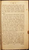 View image of 49and made as much noise as she could; the female warder of the castle departed, and, as she marched slowly through the adjoining rooms, Rosalie fervently prayed that she might never hear those sounds again. She now debated with herself, whether it would be better to go down first and examine the door, or wait till the hour when she expected Mr. Walsingham to arrive at it, and, after some deliberation, she determined on the former plan, reflecting, that if they came, and found it fastened, the rashness of Mr. Walsingham, who seemed to despise every danger that could arise from within the castle, might either impede her flight, or stain it with some deed of violence. It was necessary, however, to stay till she was sure that Cattina, and the two servants who belonged to the castle, were retired for the night; and indeed she dreaded the expedition too much to anticipate its execution. She endeavoured, by every argument she could draw from
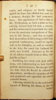 View image of 50reason and religion, to fortify herself against the fears that assailed her, and, for a moment, thought she had conquered them. The appearance of such a man as Mr. Walsingham, at such a place as Formiscusa, seemed little less than a miracle, and she endeavoured to persuade her mind it was the particular interposition of Heaven in her favour; and that to neglect such an occasion of delivering herself from perpetual confinement, would be ingratitude to the Almighty, as well as contrary to the duty she owed her husband, her child, and herself. Innocent as she was of all offence towards God or Man, what had she to fear? Fortifying her mind with these reflections, and endeavouring to look beyond present inconveniences, she thought upon the time when she should be restored to Montalbert, and should remember all that now perplexed and oppressed her only as a fearful dream. Listening attentively to the well-known sounds of shutting the doors, in the in
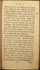 View image of 51habited part of the building, she heard them closed for the night in the usual manner; she then went to the window to see what was the weather—there was more wind than common, and she saw the old cypresses wave in the blast. From the sea, on the other side, the moon that was to light her on her perilous way was just emerging. She addressed herself to Heaven, and implored its protection; and, conscious of the rectitude of her intentions, believed that she should go through the evening's task with resolution. Her own and her child's clothes were collected in the trunks. She had dressed him ready for the journey before she put him to bed, and he slept undisturbed by the anxieties that agitated his mother's breast, who, having determined not to attempt to sleep, looked continually at the watch, and thought that time moved more than usually slow. It was, however, near midnight, and, once more collecting all her resolution, she determined on examining the door by which she hoped to
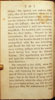 View image of 52escape. She opened, not without difficulty, that of her chamber, which led to the avenues of this lower room, and such was the violence of the wind that rushed along the passages, that had she had a candle in her hand it must have been extinguished; she trembled, and, retreating, shut the door hastily. Warned by this circumstance, she now considered what would be her situation should the light be extinguished while she was descending, and should she lose her way among the many winding passages which she remembered having seen when she followed Cattina. The apprehension was fearful, and again her resolution to go down the stairs failed her. She returned to her child, whom she hoped would sleep till her departure, kissed him, and, imploring for him to the protection of Heaven, tried to regain her courage; but as the dread of being left in utter darkness, which the rising wind gave her great reason to fear, was still the predominant idea, she endeavoured to take
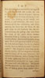 View image of 53 such precautions as occurred to her against it, and surrounded the candle, she was to carry, with a skreen of paper, lighting at the same time the lamp that hung in the room: then looking at the watch, and finding it past midnight, she once more summoned all her resolution, and softly opening the door that the force of the gust might be less suddenly felt, she advance along the passage that went from her room to the place where another branched from it, leading to the narrow winding stairs. She looked fearfully along these black and apparent endless avenues: the half-obscured light, lent by her shaded candle, served, indeed, to make "darkness visible." She feared to look long on the dreary vacuity, lest her imagination should embody forms of its own creation; she reached the staircase, and a stronger blast of wind, gathering here as in a funnel, threatened to extinguish her light, which she even held with difficulty. She found herself, however on the next floor, in a sort of landing place, from whence other
passages led off she knew not whither, and she stopped a moment to regain her breath, of which fear had nearly deprived her. In this pause, however prone her fancy was to imaginary sounds as well as sights of horror, she heard nothing but the loud gusts of wind that collected beneath from various openings in the walls, and being confined among narrow-vaulted passages, groaned in loud gusts, then sunk into sullen murmurs. Still Rosalie knew it was but the wind, the same wind that would probably in a few hours lend its friendly assistance to waft her to the place from whence she might procure a passage to England. This thought animated her courage; she raised her eyes, and assured herself that she saw nothing which could give her the least alarm; bare and broken walls, and dark avenues, which she had no business to explore, surrounded her: she determined then to pursue her way slowly and cautiously, for the steps of the second flight of stairs were broken and
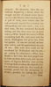 View image of 55 decayed; she advanced, when she was suddenly stopped by a sound, which she thought was that of human voices speaking low—she listened with a beating heart. A gust of wind, more violent than she had yet heard, impeded for a moment her distinguishing any other noise; but, as it died away, she was convinced she heard talking, and that there were two or more voices.—What should this mean?—With a trembling hand she once more took the watch, Walsingham had given her, from her pocket. It was not yet half an hour after twelve, and the appointment was not till two. This noise then could not be occasioned by Walsingham and his people waiting for admittance.—What then should it be?—but that their project was by some accident discovered, and that the agents of Signora Belcastro were waiting to entrap those on whom she depended for her deliverance, and that they would afterwards punish her for attempting to escape; probably by tearing her child
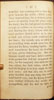 View image of 56 from her, and confining her to some dungeon beneath the castle. These terrific ideas deprived her, for a moment, of the power of moving from the place where she stood; but she had gained recollection enough to resolve on returning up stairs, and shutting her door, before these her cruel pursuers should arrive at it, when a loud and violent crush confirmed all her fears; she turned, and, as hastily as her trembling limbs would carry her, she ascended the stairs, treading lightly. Almost immediately she heard the footsteps of some person following her. Her resolution would now have failed entirely if the greater fear had not conquered the less; for she imagined, that while she was thus absent, her little infant, whom she had left sleeping in its bed, might be carried away; and that idea was so much more dreadful than any thing that could befal herself only, that she sprang forward with unusual swiftness—her candle was exstinguished, and she had no light to
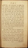 View image of 57guide her, yet continued to make her way, where, at another time, she would have found it difficult even by day.—The steps behind were heard more near, and she thought the man that followed was but a very little way from her when she reached the top of the stairs; the door of her room, which she had left open, was so still, and the lamp that remained burning afforded her light to guide her to it. She ran forward to the bed; her boy was calmly sleeping as she had left him; she threw her arms round him, and sunk quite exhausted with fear, by his side—still sensible, but in terror too great to be supported. The man who had so alarmed her, guided by the same light, followed her into the room, and approached her. Determined to die, rather than part with her child, she shrieked faintly, and implored inarticulately his mercy......But it was Walsingham himself that spoke to her, conjuring her, in the strongest, yet most
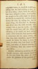 View image of 58respectful terms, to recollect herself, protesting that she had nothing to fear, unless from delay; since, from the noise he had been obliged to make, it was possible the people in the castle might be alarmed. He briefly accounted for coming so much before his time, by telling her, that the wind rising, the Chevalier de Montagny was afraid that the least increase might compel him to put out to sea; in which case she would have lost the chance of escaping, as he could not have returned while it blew from the same quarter, which it sometimes did for many weeks; and that they had, therefore, agreed that if would be better for them to force the door, in which they had found no difficulty, and rather to hazard alarming her for a moment, than not ensure her future safety. Rosalie, restored to herself by this reasonable account, now exerted herself to fly for ever from this place of dread under the guidance of her generous pro-
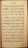 View image of 59tector, who told her two men were below that only waited his signal to fetch her baggage. This he immediately gave; and Rosalie, having only to wrap her little boy in the same coverings as had served them before, during their long journey, was instantly ready with him in her arms. Walsingham conducted her carefully down with her sleeping charge, the two men following with the trunks. Some little difficulty occurred in her mounting the broken fossé on the other side; but she was light, and naturally alert, and though she still trembled from her late terror, the certainty of being released from her cruel confinement, of which there now seemed no doubt, lent her strength, with the assistance of Walsingham's servant, (for she would trust her child only to Walsingham himself), to conquer this impediment. Her deliverer then followed, and restored his charge to her, and offering her his arm, which she readily accepted, they hastened as much
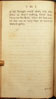 View image of 60 as her strength would admit, and, after about an hour's walking, found themselves on the shore, where the boat waited that was to carry them on board the Maltese galley.
|
){kind=link}
){kind=link}
){kind=link}
){kind=link}
){kind=link}
){kind=link}
){kind=link}
){kind=link}
){kind=link}
){kind=link}
){kind=link}
){kind=link}
){kind=link}
){kind=link}
){kind=link}